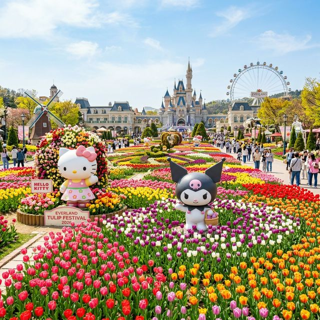
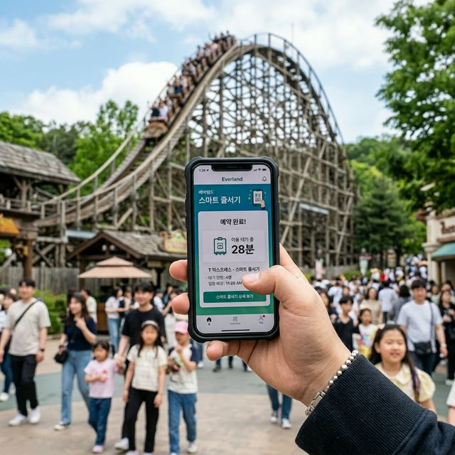
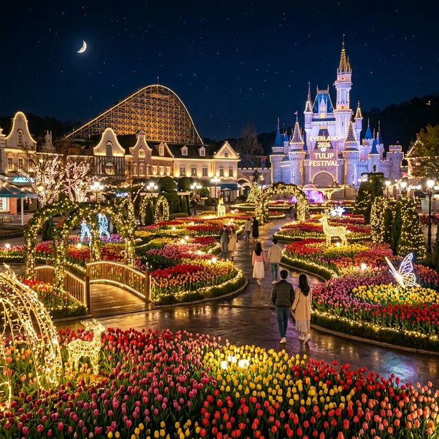

올해 2026 에버랜드 튤립 축제는 '50년의 기억, 꽃으로 피어나다'라는 슬로건 아래 진행됩니다. 3월 하순부터 4월 말까지 이어지는 이번 축제의 메인 무대인
포시즌스가든은 거대한 튤립 카펫으로 변신했는데요. 특히 이번 시즌의 킬러 콘텐츠는 단연 '산리오캐릭터즈 콜라보레이션'입니다. 헬로키티, 마이멜로디, 쿠로미, 시나모롤 등
전 세계적으로 사랑받는 캐릭터들이 튤립 정원 곳곳에 거대한 스태츄와 테마존으로 구현되어 방문객들을 맞이합니다.
단순히 캐릭터 동상만 세워둔 것이 아니라, 각 캐릭터의 특성에 맞는 꽃의 색상과 향기를 조화시킨 스토리텔링형 가든 디자인이 일품입니다. 예를 들어, 쿠로미 가든은 보라색
튤립과 시크한 소품들이 어우러져 MZ세대의 취향을 정조준하고 있습니다. 축제 기간에는 산리오 한정판 굿즈와 캐릭터 테마 푸드도 판매되는데, 인기 품목은 오전 중 매진될 정도로 열기가 뜨거우니 캐릭터
팬이라면 가든 관람 전 기념품 샵부터 체크하는 센스가 필요합니다. 50주년 기념 멀티미디어 쇼도 야간에 매일 상영되니 밤까지 머물러야 할 이유가 충분합니다.

산리오 캐릭터와 수백만 송이의 튤립이 어우러진 2026 에버랜드 포시즌스가든 — AI 제작 이미지
에버랜드를 방문하기 전, 반드시 가장 먼저 해야 할 일은 '에버랜드 공식 모바일 앱' 설치입니다. 이제 에버랜드는 종이 티켓이 아닌 앱 기반의 '스마트 줄서기' 시스템으로
운영되기 때문인데요. 입장하자마자 앱에 이용권을 등록하고, 인기 어트랙션의 '스마트 줄서기' 버튼을 광클릭하는 것이 성공적인 여행의 반이라 해도 과언이 아닙니다. 스마트 줄서기는 보통
개장 직후부터 오후 2시까지만 운영되며, 예약이 완료되면 지정된 시간에 해당 시설을 현장 대기 없이 즉시 이용할 수 있습니다.
여기서 중요한 실전 팁은 '동시 예약 제한'을 이해하는 것입니다. 스마트 줄서기는 한 번에 한 그룹의 시설(A그룹: T익스프레스, 사파리월드 등 주요 시설 / B그룹: 판다월드 등)만 예약 가능합니다.
따라서 사파리월드나 로스트밸리 중 하나를 먼저 선점한 뒤, 이용이 완료되는 즉시 다음 시설을 예약하는 릴레이 전략이 필요합니다. 만약 스마트 줄서기 예약에 실패했다면,
오후 2시 이후부터 시작되는 '현장 줄서기'를 노려야 합니다. 앱을 통해 실시간 대기 시간을 수시로 확인하며 동선을 유연하게 조정하는 것, 그것이 바로 디지털 노하우의 핵심입니다.
평일이라고 해서 에버랜드가 한산할 것이라는 기대는 금물입니다. 특히 튤립 축제 기간에는 중고등학생들의 소풍 인파와 가족 단위 방문객이 몰리기 때문인데요. 평일에도 대기 시간을 최소화하고 싶다면
'반시계 방향 동선'을 기억하세요. 대부분의 방문객은 입장 직후 정문에 가까운 포토존이나 판다월드로 몰리는 경향이 있습니다. 이때 여러분은 과감히 파크 가장 안쪽의
T익스프레스나 유러피안 어드벤처 구역으로 향하세요. 인파가 덜 몰리는 개장 초기에 가장 인기 있는 스릴 어트랙션을 정복하는 것이 효율적입니다.
튤립 축제의 주인공인 포시즌스가든은 햇살이 가장 예쁜 오전 11시에서 오후 1시 사이에 방문하시는 것을 추천합니다. 자연광 아래서 튤립의 색감이 가장 생생하게 표현되어
사진이 잘 나오기 때문입니다. 식사 시간 또한 남들과는 다르게 설정하세요. 오후 12시에서 1시 사이는 모든 식당이 장사진을 이룹니다. 차라리 오전 11시에 이른 점심을 먹거나, 오후 2시 이후에
여유로운 식사를 하시는 것이 시간을 버는 길입니다. 앱의 대기 시간 차트를 보며 40분 이하인 시설들을 우선적으로 공략하는 유연한 대응이 평일 에버랜드 정복의 핵심 기술입니다.

에버랜드 앱을 통해 실시간 대기 정보를 확인하고 예약하는 스마트한 모습 — AI 제작 이미지
에버랜드 여행의 고비는 주차장 진입부터 시작됩니다. 가장 편리한 곳은 정문 바로 앞 유료 주차장이지만, 평일에도 오전 10시면 만차 표지판이 세워집니다. 정문 주차의 핵심은 카카오T 앱을
통한 자동 결제 등록입니다. 주차비 할인은 물론, 출차 시 정산기 앞에 줄을 설 필요가 없어 체력을 크게 아낄 수 있습니다. 만약 아이가 어리거나 짐이 많아 무조건 정문에
주차해야 한다면, 최소 1주일 전 '에버랜드 발레 파킹' 서비스를 유료로 예약하세요. 비용은 들지만, 종일 주차와 발레 대행을 한 번에 해결할 수 있어 진정한 '돈으로
사는 여유'를 경험하게 됩니다.
무료 주차장을 이용할 경우에는 외곽에 위치한 1, 2, 3주차장으로 안내받게 됩니다. 이곳은 주차 후 무료 셔틀버스를 타고 이동해야 하므로, 이동 시간으로 약 20분을 추가로 계산하셔야 합니다. 팁을
드리자면, 귀가 시 자신의 차량 위치를 기억하기 위해 **주차 구역 번호와 주변 지형물**을 앱이나 사진으로 기록해 두세요. 밤에 피곤한 상태에서 넓은 주차장을 헤매는 것보다 훨씬 현명한 처사입니다.
전기차 사용자라면 정문 주차장 내 충전 구역을 미리 확인하고 선점하시는 것도 주차난을 피할 수 있는 소소한 전략 중 하나입니다.
에버랜드 튤립 축제장에서 남들과 똑같은 배경으로만 찍고 계신가요? 인생 샷을 건지고 싶다면 '로우 앵글(Low Angle)'을 활용해 보세요. 카메라 렌즈를 튤립 바로
가까이 대고 위로 올려다보며 찍으면, 수만 송의 튤립이 하늘을 덮는 듯한 장엄한 풍경 속에 여러분을 담을 수 있습니다. 특히 포시즌스가든 곳곳에 설치된 작은 벤치나 하얀 울타리는 그 자체로 훌륭한
소품이 됩니다. 캐릭터 가든에서는 대형 스태츄의 정면보다는 캐릭터의 시선이 머무는 방향에서 함께 먼 곳을 바라보는 연출을 해보세요. 훨씬 입체적이고 감성적인 분위기가
연출됩니다.
또한, 튤립 축제장의 숨은 명당은 '장미원 산책로' 쪽에서 내려다보는 가든 뷰입니다. 이곳은 상대적으로 인파가 적어 인물 뒤에 다른 사람이 걸리는 현상을 피할 수
있습니다. 촬영 시간대는 일몰 직전의 '골든 아워'를 노리세요. 역광으로 비치는 튤립의 맑은 색감과 따스한 오렌지빛 조명이 어우러져 보정이 필요 없는 완벽한 사진을
만들어냅니다. 야간 라이트업이 시작되면 스마트폰의 '야간 모드'를 활성화하고, 조명이 직접 닿는 구역에서 흔들림 없이 촬영하시기 바랍니다. 50주년 기념 조형물 앞에서는 광각 렌즈를 활용해 웅장한
규모감을 살리는 것도 잊지 마세요.
에버랜드의 명성을 튤립만큼이나 높인 주인공은 바로 판다 가족입니다. 비록 푸바오는 떠났지만, 아이바오, 러바오, 그리고 쌍둥이 루이바오와 후이바오의 인기는 여전히 하늘을
찌릅니다. 판다월드는 스마트 줄서기가 가장 먼저 마감되는 곳이므로, 입장 직후 1순위 타겟으로 잡아야 합니다. 평일에도 오후 2시 이후 현장 줄서기를 할 경우 1시간 이상의 대기가 상시 발생합니다.
판다들은 오전 시간에 가장 활동적이고 대나무를 맛있게 먹는 모습을 보여주므로, 가급적 이른 시간에 방문하시는 것이 가장 행복한 판다를 볼 수 있는 비결입니다.
판다 관람은 조용히 해야 한다는 점을 기억하세요. 예민한 판다들을 위해 정숙을 유지하며 관람하는 문화가 잘 정착되어 있습니다. 팁으로, 판다월드 출구 쪽 기념품 샵에서만
파는 50주년 한정 판다 인형은 선물용으로 인기가 매우 높습니다. 판다를 보고 난 뒤, 바로 옆에 있는 하늘 정원 길을 따라 포시즌스가든으로 내려오는 코스는 에버랜드의
자연과 귀여움을 동시에 만끽할 수 있는 최고의 미니 산책 코스입니다. 쌍둥이 판다들이 나무를 타는 귀여운 모습은 평일에 방문해야 그나마 조금 더 여유롭게 감상할 수 있다는 점도 참고해 주세요.

50주년 기념 조명과 튤립이 어우러진 꿈같은 에버랜드의 밤 — AI 제작 이미지
| 식당 이름 | 대표 메뉴 | 특징 및 장점 |
|---|---|---|
| 포메인 에버랜드점 | 쌀국수, 볶음밥 | 깔끔하고 빠른 회전율, 소화가 잘 됨 |
| 쿠치나 마리오 | 피자, 파스타 | 튤립 가든을 내려다보는 야외 테라스석 명당 |
| 버거카페 유럽 | 수제버거 세트 | 빠른 식사를 원하는 분들에게 최적화 |
| 한가람 | 돼지김치찌개, 고등어구이 | 든든한 한식을 원하는 부모님들의 원픽 |
하루 평균 15,000보 이상을 걷게 되는 에버랜드에서 가장 중요한 준비물은 '폭신한 운동화'입니다. 디자인보다는 발의 편안함을 우선하세요. 또한, 긴 대기 줄에서
아이들이나 부모님이 힘들어할 때를 대비해 접이식 간이 의자나 낚시 의자를 챙기시면 그 가치는 금값보다 귀하게 느껴질 것입니다. (최근 안전상의 이유로 대형 돗자리는 휴식
구역 외에서 제한될 수 있으니 주의하세요.) 휴대용 보조배터리는 에버랜드 앱을 종일 사용해야 하므로 2만mAh 이상의 대용량을 추천합니다.
환절기 테마파크는 낮과 밤의 온도 차가 10도 이상 벌어집니다. 낮에는 반팔이 시원하겠지만, 야간 공연을 기다리는 밤에는 바닷바람 못지않은 산바람이 불어오니 경량 패딩이나 무릎
담요를 반드시 가방에 넣어 가세요. 팁으로, 가방에 짐이 많다면 정문이나 각 구역에 구비된 코인 로커(유료)를 활용해 무거운 짐을 맡겨두고 자유롭게 파크를 즐기시는 것이 지치지
않는 여행의 노하우입니다. 아이와 함께라면 유모차에 걸 수 있는 가방 걸이나 핸디 선풍기도 챙겨주시면 더욱 쾌적한 관람이 가능합니다.
에버랜드의 50년 역사가 고스란히 녹아있는 이번 2026 튤립 축제는 단순한 놀이공원 방문 그 이상의 의미를 가집니다. 부모님이 어릴 적 손잡고 오셨던 그 정원을, 이제는
자신의 아이와 함께 걷는 장소라는 상징성이 있기 때문인데요. 수많은 튤립 사이로 비치는 봄볕과 아이들의 웃음소리, 그리고 추억의 멜로디가 어우러지는 이 시간은 그 어떤 값비싼 선물보다 찬란한 가치를
지닙니다.
복잡한 시스템과 인파에 겁먹지 마세요. 이번 포스팅에서 알려드린 스마트 줄서기 기술과 동선 최적화 비법만 기억하신다면, 여러분의 여행은 훨씬 여유롭고 풍성해질 것입니다.
사랑하는 사람의 손을 잡고 평생 기억될 2026년의 봄을 에버랜드에서 직접 그려보시는 건 어떨까요? 튤립의 꽃말처럼 사랑과 행복이 가득한 여러분의 에버랜드 여행을 진심으로 응원합니다!